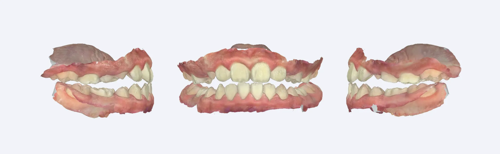

Fixed Retainer wire는 그대로 두어도 괜찮습니다 1. 상악, 하악, 교합 순서대로 스캔을 진행해주세요 2. 구치부는 교합 확인을 위해 5번 또는 5번까지는 스캔해주세요
Removable Retainer Full arch의 스캔이 필요합니다 1. 정성스러운 스캔을 부탁드립니다 2. 7번 distal까지 충분히 스캔해주세요 3. 치아사이 embraser의 스캔은 유지력 파트에서 중요합니다 4. Resin plate가 만들어져야 하는 것을 고려하여 palatal 잘 나오게 부탁드려요
Fixed appliance (band type) 1 Way R.P.E / T.P.A / Brand & Loop Lingual Arch 1. 구강 내 Band 피팅해주세요 2. Band가 끼워져있는 상태에서 스캔해주세요 3. Band를 그대로 Hi tech 기공소로 보내주세요
Fixed appliance (band type) 2 Way R.P.E / T.P.A / Brand & Loop Lingual Arch 1. 구강 내 Band 피팅해주세요 2. 밴드번호를 의뢰서에 적어주세요 3. 밴드를 제거 후 스캔하여 파일을 보내주세요 4. Lab에서 Band Number를 확인하여 장치를 제작합니다
Functional appliance & Splint Activator Bionator FR 1. 상, 하악 full arch 스캔을 진행해주세요 2. FR 제작 시 border까지 잘 나오게 부탁드립니다 3. 구성 교합 상태로 전치부에 wax나 스틱을 물어 위치를 유지합니다 4. 교합 스캔(구치부)을 진행합니다 5. 위 그림과 같이 구성 교합이 채득되면 성공! 